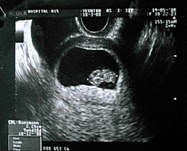
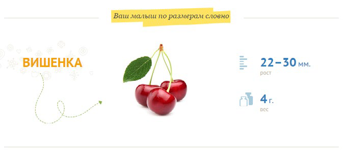
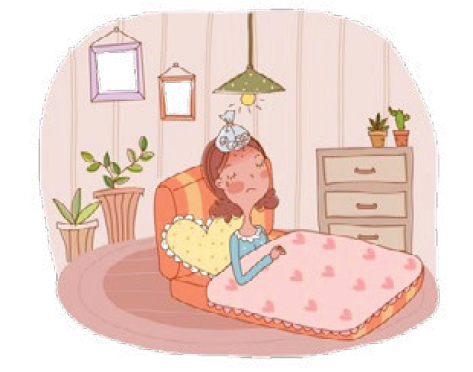

9 неделя беременности
Более отчетливо видны черты лица. Хвостик превращается в копчик и становится невидимым.
Девятая акушерская неделя открывает третий месяц вашего «интересного» положения.
Конечно, мало, кто из окружающих способен заметить внешние изменения в вашем теле, а тем более понять истинную причину частых перемен настроения. Выдать вас может только лишь ранний токсикоз, который, к счастью, бывает далеко не у всех беременных.
Девятая неделя беременности характеризуется рядом изменений, происходящих в организме женщины. Возможно, вы уже заметили, что любимое платье «по фигурке» стало вам немного маловато в области талии. Однако, внешне наличие беременности пока еще не заметно для окружающих.
У малыша начинают работать почки, печень, мозг и легкие.
Голова теперь составляет половину длины его тела, и хвостик, который делал его похожим на головастика, начинает исчезать. Спинка начинает выпрямляться. Пальцы на руках и ногах по-прежнему снабжены перепонками, но они полностью исчезнут в следующие несколько недель. Хотя глаза плода полностью сформировались к этому периоду, еще должно пройти несколько недель, прежде чем они откроются.
Мышцы малыша так же увеличились, что позволяет ему более активно двигаться, хотя его движения может зафиксировать только УЗИ. Кожа ребенка прозрачная, очень тонкая, сосуды просвечивают сквозь тонкие кожные покровы.
ВАШ ОРГАНИЗМ
Если у вас токсикоз, то будьте готовы к тому, что сейчас она наберет еще большие обороты. питание может превратиться в настоящую проблему. Тошнить может от любой еды, в то же время могут появиться болезненные пристрастия к определенным продуктам.
Что можно посоветовать для облегчения состояния? Не готовьте сами, как ни странно, это помогает. Утром не вставайте с постели сразу, сначала съешьте что-нибудь, хотя бы сухарик, и чуть-чуть полежите.
Очень вероятно, что усталость по-прежнему отнимает у вас жизненные силы, но пусть вас успокаивает тот факт, что это абсолютно нормально. В дополнение к болезненности чувствительной груди, вы можете заметить, что ваши соски приобретают более темный цвет, а также могут несколько набухнуть. Также на груди могут появляться голубые сеточки, не бойтесь, это начинают расширяться вены, однако подобное явление у многих женщин проявляется на более позднем сроке.
При выполнении физических нагрузок (подъем по лестнице) появляется одышка, значительно учащается пульс, могут появляться круги перед глазами и мелькание мушек.
ЗДОРОВЫЕ СОВЕТЫ
Вам необходимо предпринять профилактические меры для предотвращения расширения вен. Для этого нужно подобрать бюстгальтер, который обеспечит хорошую поддержку молочных желез.
Избегайте чрезмерных физических нагрузок, не поднимайте тяжести, не напрягайте пресс. Избегайте длительного стояния, т.к. это приводит к застою крови и развитию варикоза. Лучше чаще прогуливайтесь. Дома для разгрузки нижних конечностей необходимо придавать им возвышенное положение. Проконсультируйтесь с врачом о возможности ношения специальных эластичных чулок, которые способствуют разгрузке подкожных вен.
Ограничьте прием витамина А, ибо слишком высокое его потребление может навредить маленькому, поэтому исключите из рациона печенку и рыбий жир. А вот прием витаминов группы Р и С продолжайте, они способствуют укреплению стенок кровеносных сосудов.
Старайтесь избегать сладких закусок в течение дня, поскольку они обеспечивают лишь временный подъем энергии, а итоге вы будете чувствовать себя еще более развитой.
Избегайте любых блюд, не прошедших достаточной термической обработки, потенциально способные содержать листерию или сальмонеллу. Употребляйте только как следует приготовленное мясо – это значит, оно не должно иметь на разрезе участков розового цвета. Не забывайте, что любая пища, принимаемая вами, попадет и к вашему малышу через пуповину.
Не надо пить слишком много чая и натурального зернового кофе, тем более крепкие. Кофе или чай можно с успехом заменить компотом, морсом, настойками ягод и трав, плодами шиповника.
Если у вас поднялась температура, это может указывать на наличие инфекции или на простуду. Если с температурой появились кашель, насморк, боль в горле – это явные признаки простуды или гриппа. Самолечение сейчас вам категорически запрещено, необходимо обратиться в больницу. До этого облегчить состояние можно, выпив теплого молока с инжиром. Также промойте нос и прополощите горло. Самостоятельно назначать лекарственные препараты – запрещено!
8 неделя 10 неделя